Aktuálna ponuka
Nehnuteľnosti, ktoré ponúkam
15 nehnuteľností na predaj a prenájom. Vyberte typ, alebo napíšte lokalitu.
15 z 15 ponúk
 PozemokNové4
37 740 €Len u nás! DIAMOND HOME s.r.o. ponúka Vám na predaj stavebný pozemok v Gabčíkove ,Dedinský ostrov v lokalite Dedinsky ostrov
Gabčíkovo
386 m²
DIAMOND HOME s.r.o. ponúka Vám na predaj stavebný pozemok v Gabčíkove ,Dedinský ostrov v lokalite Dedinsky ostrov. Ide o chránenú vodohospodársku…
PozemokNové4
37 740 €Len u nás! DIAMOND HOME s.r.o. ponúka Vám na predaj stavebný pozemok v Gabčíkove ,Dedinský ostrov v lokalite Dedinsky ostrov
Gabčíkovo
386 m²
DIAMOND HOME s.r.o. ponúka Vám na predaj stavebný pozemok v Gabčíkove ,Dedinský ostrov v lokalite Dedinsky ostrov. Ide o chránenú vodohospodársku…
 Komerčné priestoryNové8
27 000 €DIAMOND HOME s.r.o. ponúka Vám na predaj, kompletne podpivničený garáž v radovej zástavbe pár krokov od centre mesta v Dunajskej Strede ulica Jilemnického
Dunajská Streda
36 m²
DIAMOND HOME s.r.o. ponúka Vám na predaj, kompletne podpivničený garáž v radovej zástavbe pár krokov od centre mesta v Dunajskej Strede ulica…
Komerčné priestoryNové8
27 000 €DIAMOND HOME s.r.o. ponúka Vám na predaj, kompletne podpivničený garáž v radovej zástavbe pár krokov od centre mesta v Dunajskej Strede ulica Jilemnického
Dunajská Streda
36 m²
DIAMOND HOME s.r.o. ponúka Vám na predaj, kompletne podpivničený garáž v radovej zástavbe pár krokov od centre mesta v Dunajskej Strede ulica…
 DomNové10
326 000 €LEN U NÁS!!!Výborný investičný zámer/DIAMOND HOME s.r.o. ponúka Vám na predaj novo rekonštruovaný rodinný dom s tromi bytovými jednotkami v obci Tomášíkovo
Tomášikovo
318 m²
Realitná kancelária DIAMOND HOME s.r.o. Vám exkluzívne s potešením exkluzívneponúka na predaj novo rekonštruovaný rodinný dom s tromi samostatnými…
DomNové10
326 000 €LEN U NÁS!!!Výborný investičný zámer/DIAMOND HOME s.r.o. ponúka Vám na predaj novo rekonštruovaný rodinný dom s tromi bytovými jednotkami v obci Tomášíkovo
Tomášikovo
318 m²
Realitná kancelária DIAMOND HOME s.r.o. Vám exkluzívne s potešením exkluzívneponúka na predaj novo rekonštruovaný rodinný dom s tromi samostatnými…
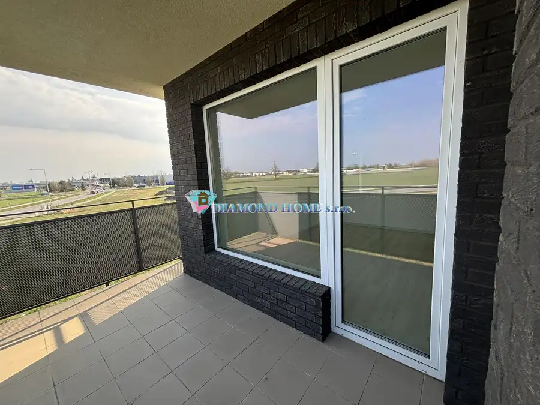
Byt10 187 600 €Nenechajte si újsť zarezervovať si pre Vás ideálný 3 izbový byt v novostavbe v Dunajskej Strede Dunajská Streda 3-izbový DIAMOND HOME s.r.o. ponúka Vám novovstavané byty na Pannónskom háje vo vyhľadávanej časti Dunajskej Stredy. Rozkloha bytu 86,3m2: V suteréne ponúkame…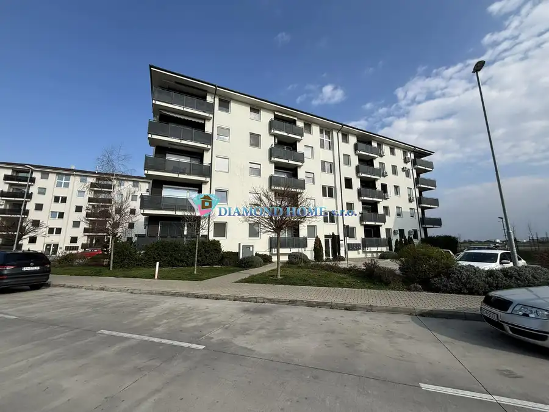
Byt10 187 600 €Nenechajte si újsť zarezervovať si pre Vás ideálný 3 izbový byt v novostavbe meste v Dunajskej Strede Dunajská Streda 3-izbový86 m² DIAMOND HOME s.r.o. ponúka Vám novovstavané byty na Pannónskom háje vo vyhľadávanej časti Dunajskej Stredy. Rozkloha bytu 86,3m2: V suteréne ponúkame…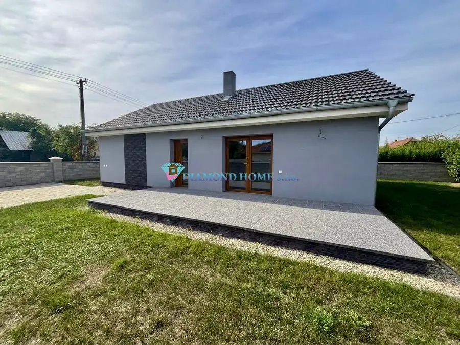
Dom10 208 000 €Na predaj: priestranný 3-izbový rodinný dom , novostavbu v obci Blahová Blahová 100 m² Spoločnosť DIAMOND HOME s.r.o. si Vám dovoľuje s potešením ponúknuť na predaj priestranný 3-izbový rodinný dom, ktorý sa nachádza v tichej a…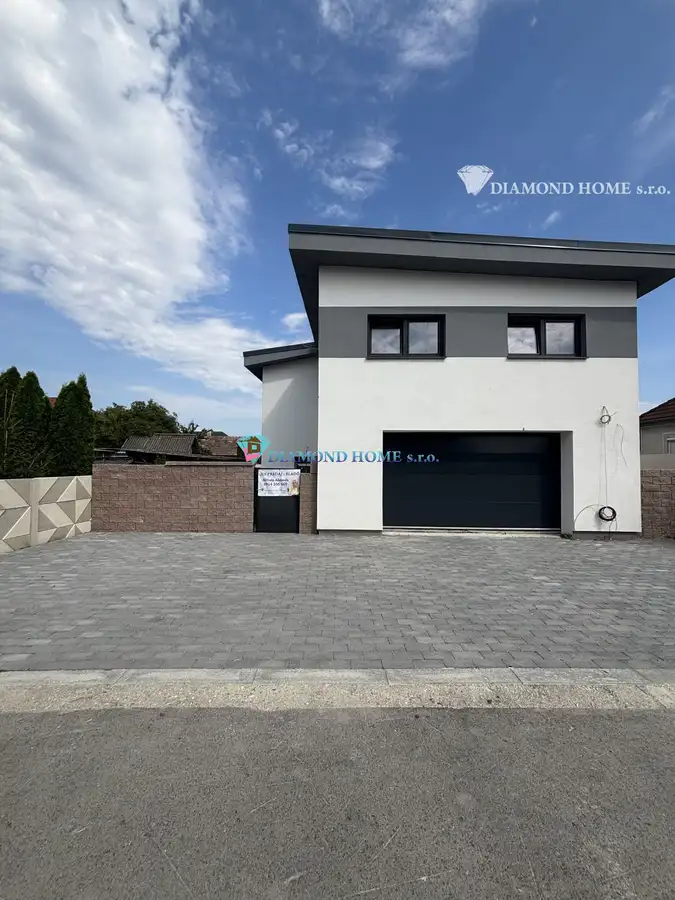
Dom10 250 000 €DIAMOND HOME s.r.o. ponúka Vám na predaj novostavbu 4 izbového rodinného domu garážom pre 2 autá v obci Topoľníky Topoľníky 270 m² DIAMOND HOME s.r.o. si Vám dovoľuje s potešením ponúknuť výnimočnú príležitosť – novostavbu moderného 4-izbového rodinného domu s garážou pre dva…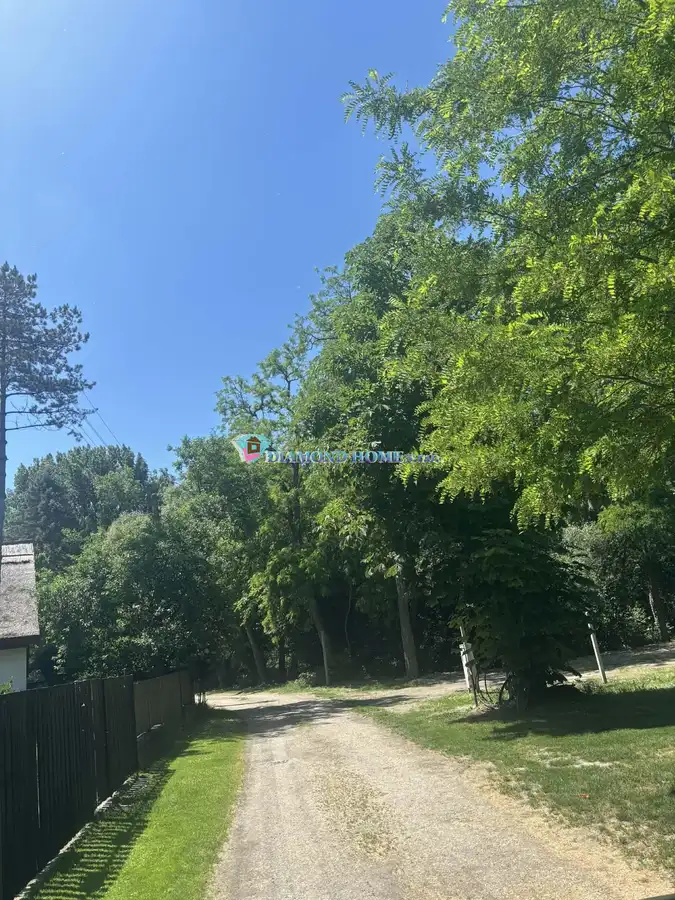
Pozemok4 39 000 €Len u nás! DIAMOND HOME s.r.o. ponúka Vám na predaj stavebný pozemok v Gabčíkove ,Dedinský ostrov v lokalite Dedinsky ostrov Gabčíkovo DIAMOND HOME s.r.o. ponúka Vám na predaj stavebný pozemok v Gabčíkove ,Dedinský ostrov v lokalite Dedinsky ostrov. Ide o chránenú vodohospodársku…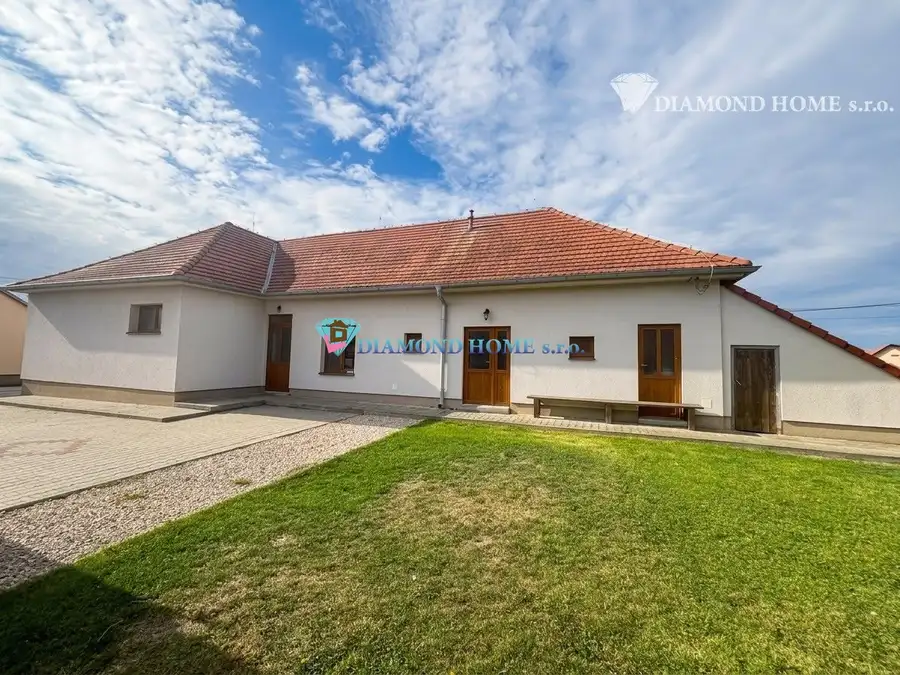
Dom10 215 500 €Na predaj: 4-izbový rodinný dom s garážou v Gabčíkove Gabčíkovo 135 m² Realitná kancelária DIAMOND HOME s.r.o. Vám s radosťou ponúka na predaj priestranný 4-izbový rodinný dom s garážou v obľúbenej lokalite Gabčíkovo.…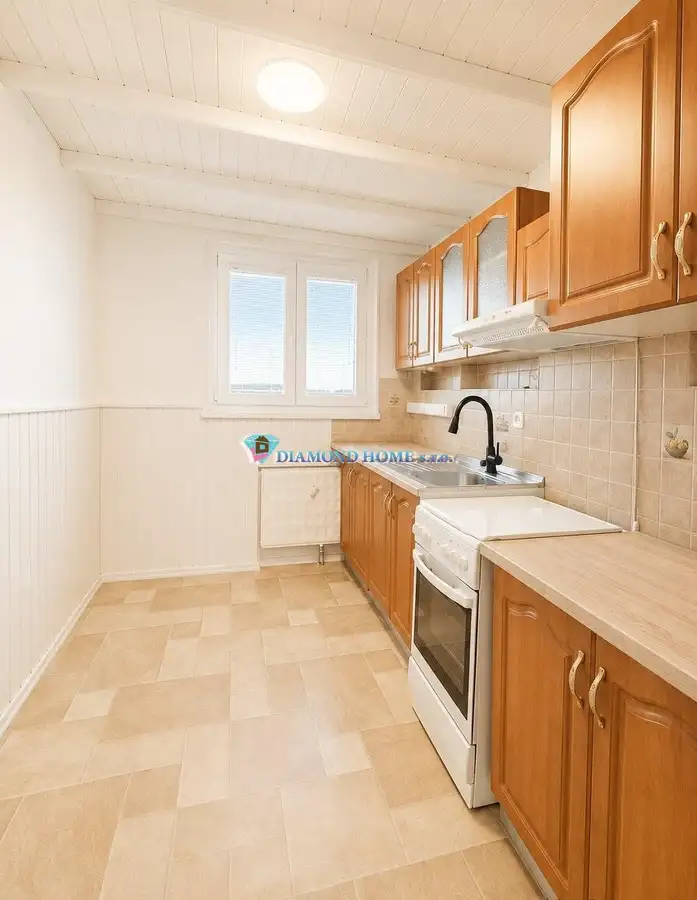
Byt8 142 900 €Na predaj: 3-izbový byt blízko centra, Dunajská Streda , Rybný Trh (70 m² + loggia) Dunajská Streda 3-izbový70 m² Spoločnosť DIAMOND HOME s.r.o. Vám ponúka na predaj svetlý a priestranný 3-izbový byt v atraktívnej lokalite blízko centra mesta v Dunajskej Strede ,…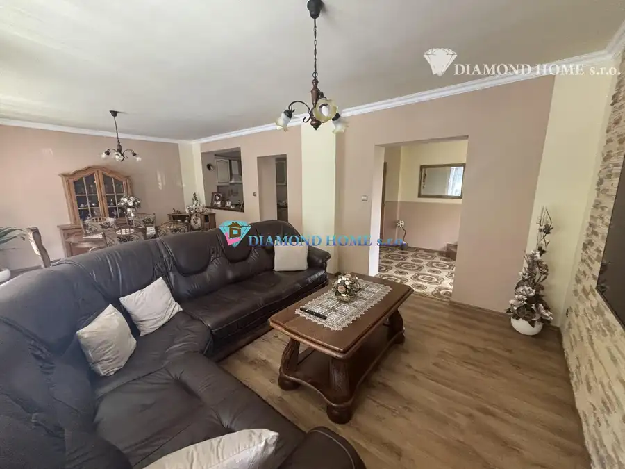
Dom10 184 900 €DIAMOND HOME s.r.o. ponúka Vám na predaj kompletne rekonštruovaný trojpodlažný rodinný dom s garážom, krytou terasou a krásne upravenou záhradou v ob Okoč 192 m² DIAMOND HOME s.r.o. ponúka Vám exkluzívne na predaj kompletne rekonštruovaný trojpodlažný rodinný dom s garážom, krytou terasou a krásne upravenou…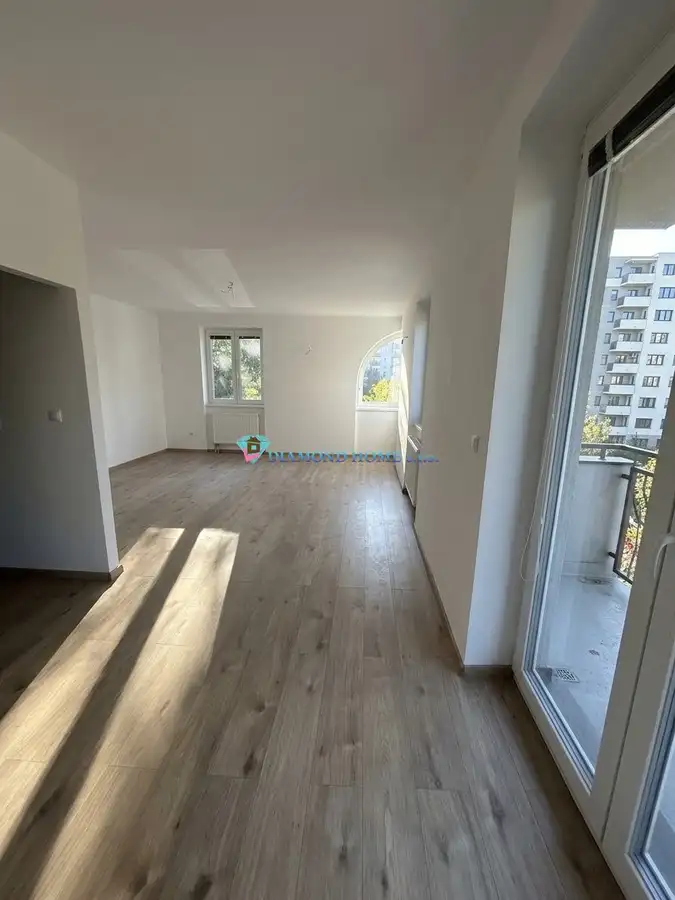
Byt10 152 000 €Na predaj: Kompletne zrekonštruovaný 3-izbový byt v Dunajskej Strede, Nová Ves Dunajská Streda 3-izbový69 m²2. podlažie Spoločnosť DIAMOND HOME s.r.o. Vám s radosťou ponúka na predaj kompletne zrekonštruovaný 3-izbový byt nachádzajúci sa v novej bytovke v Dunajskej…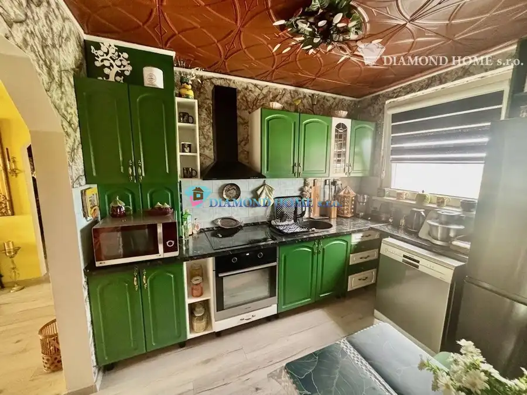
Byt10 164 990 €Zrekonštruovaný 3-izbový byt s lodžiou, Dunajská Streda – Nám. SNP Dunajská Streda 3-izbový72 m²7. podlažie Spoločnosť DIAMOND HOME s.r.o. Vám exkluzívne ponúka na predaj pekne prerobený 3-izbový byt v Dunajskej Strede na Námestí SNP. Ide o komfortné…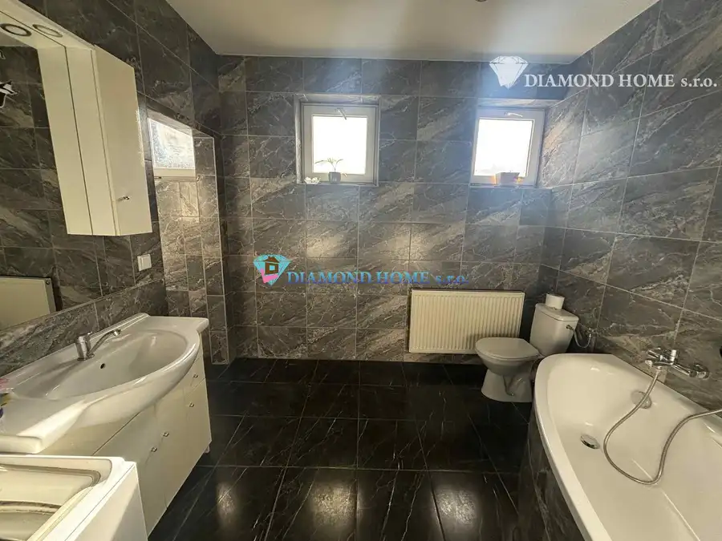
DomRezervované10 149 900 €DIAMOND HOME s.r.o. ponúka Vám na predaj 3 izbového rodinného domu v obci Ohrady Ohrady 98 m² DIAMOND HOME s.r.o. Vám ponúka na predaj 3-izbového rodinného domu v obci Ohrady.Základné informácie:Plocha pozemku: 427 m²Zastavaná plocha: 98 m²Rok… DomRezervované10
Cena dohodouDIAMOND HOME s.r.o. ponúka Vám na predaj novostavbu 4 izbového rodinného domu zastrešeným bazénom a úsporným tepelným čerpadlom
Dolný Štál
100 m²
„Hľadáte bývanie v Dunajskej Strede, ale za svoj rozpočet nachádzate len dvojdomy bez súkromia? Vymeňte 7 minút cesty autom za luxusný, samostatne…
DomRezervované10
Cena dohodouDIAMOND HOME s.r.o. ponúka Vám na predaj novostavbu 4 izbového rodinného domu zastrešeným bazénom a úsporným tepelným čerpadlom
Dolný Štál
100 m²
„Hľadáte bývanie v Dunajskej Strede, ale za svoj rozpočet nachádzate len dvojdomy bez súkromia? Vymeňte 7 minút cesty autom za luxusný, samostatne…
Tomuto výberu zatiaľ nezodpovedá žiadna ponuka. Napíšte mi, čo hľadáte.
Hľadám pre klientov